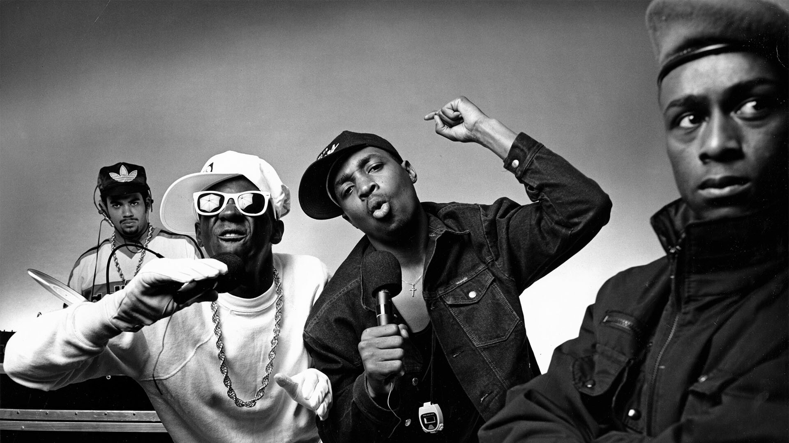

1970년대 후반 뉴욕 브롱스 남쪽 빈민가에 거주하는 미국 흑인과 남미 히스패닉계 청소년들에 의해 형성된 새로운 문화운동 전반을 가리키는 말이다. 이에 힙합을 '미국에서 독자적으로 만들어진 유일한 문화'라고 평하기도 한다.

특징
명칭의 어원
'엉덩이를 흔들다(hip hopping 혹은 hopping hip)'라는 표현에서 유래되었다. MC Keef Cowboy가 'Hip-Hop'이라는 말을 처음 만들었다고 전해진다. 친구가 군대에 가게 되었는데 Keef Cowboy가 친구를 놀리면서 '그럼 훈련소에서 행군할 때 '힙-합'하면서 구령을 외치겠네?'라며 놀렸다. 한국으로 치면 '하나 둘'을 발음을 뭉개서 '핫-뚜'라고 말하는 것이다. 일종의 군대식 발음과 엉덩이(hip)을 이용한 말장난인 셈이란다. 그걸 본 옆 친구들이 폭소를 터뜨리니까 그걸 무대에서 하기 시작했고 다른 사람들이 그 소리를 응용하고 샘플링하면서 랩과 브레이킹 문화를 힙합으로 부르게 되었다.
힙합 문화를 이루는 요소
랩·디제잉·그래피티·브레이크댄싱 등